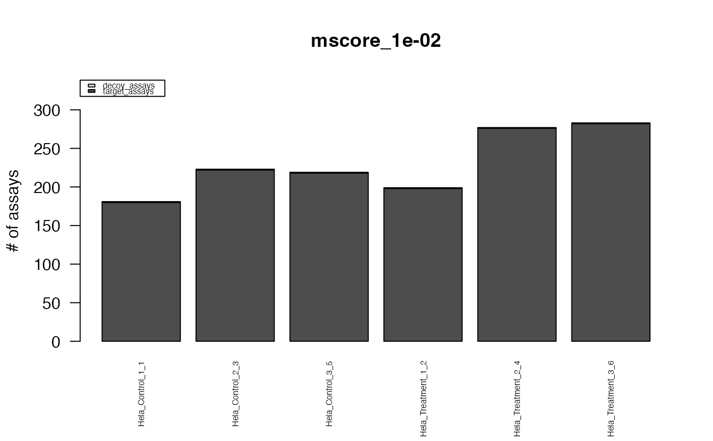
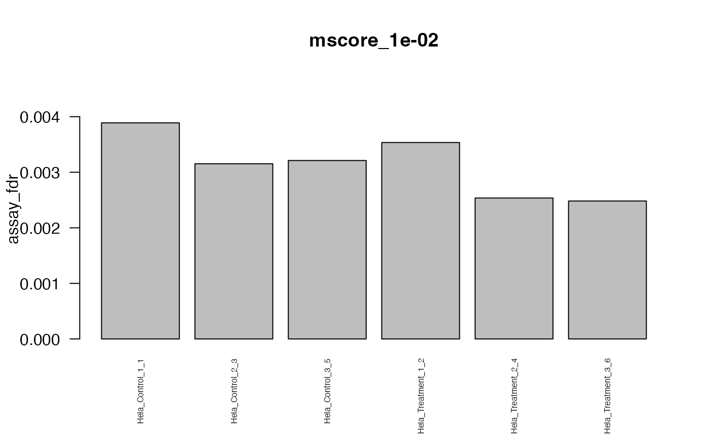
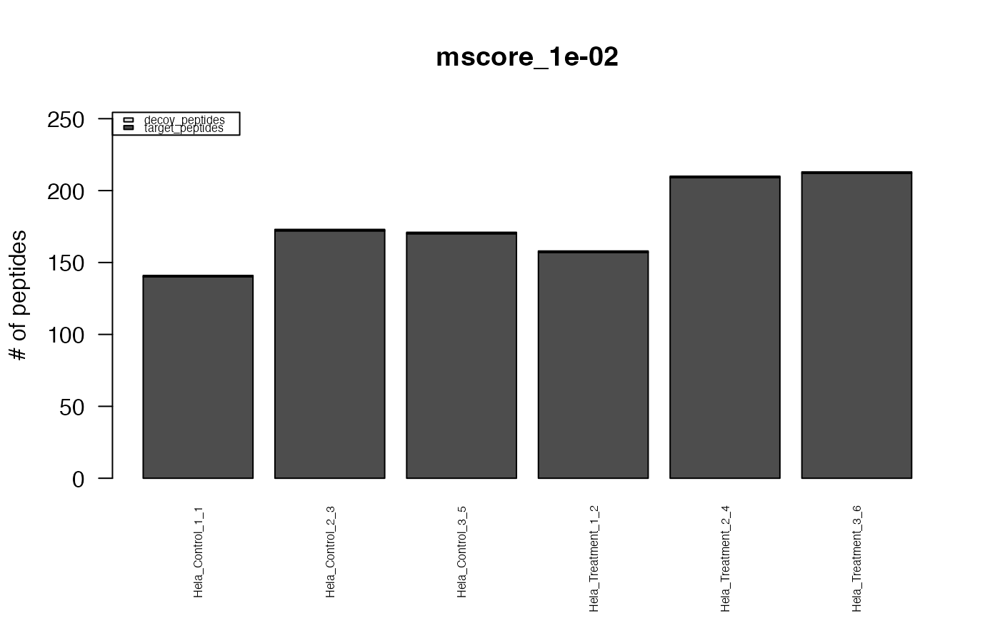
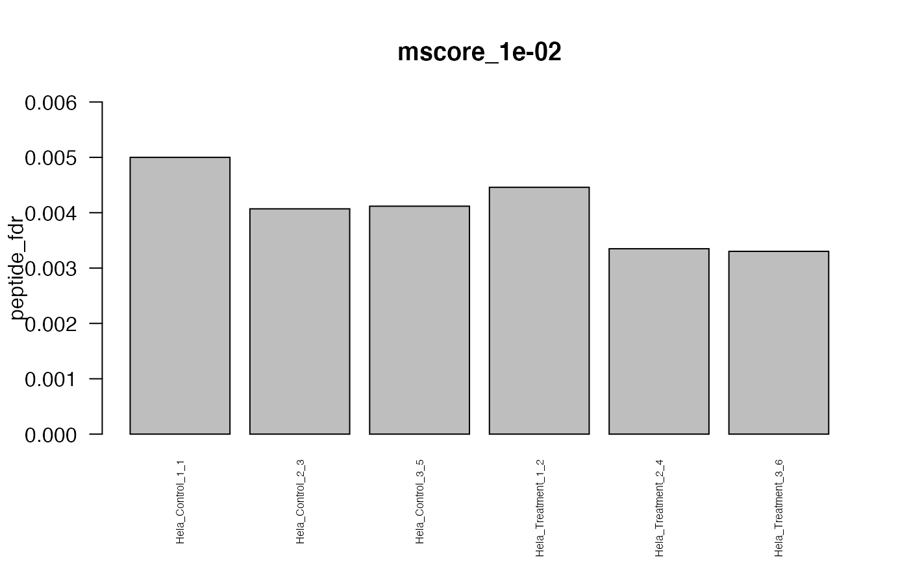
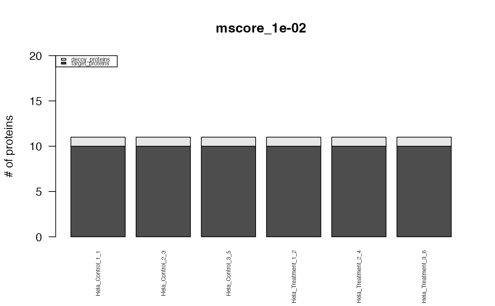

This function creates standard plots from result arrays as produced by e.g. the function assess_fdr_byrun(), visualizig assay, peptide and protein level FDR for each run at m-score cutoffs 1e-2 and 1e-3. Furthermore, Target and Decoy ID numbers are visualized.
Array of by-run FDR assessment results as produced e.g. by the function assess_fdr_byrun() from this package.
Choose output type. "pdf_csv" creates the output as files in the working directory, "Rconsole" triggers delivery of the output to the console enabling further computation and/or custom plotting / output.
Basename for output files to be created (if output = "pdf_csv" has been selected).
Define m-score levels to plot the estimated FDR results.
Extra arguments passed on to functions inside this.
Plots in Rconsole or report files.
{
data("OpenSWATH_data", package="SWATH2stats")
data("Study_design", package="SWATH2stats")
data <- sample_annotation(OpenSWATH_data, Study_design)
x <- assess_fdr_byrun(data, FFT=0.7, output="Rconsole", plot=FALSE)
retlist <- plot(x, output="Rconsole", filename="Assess_fdr_byrun_testplot",
plot_mscore_levels=0.01)
}
#> The average FDR by run on assay level is 0.003
#> The average FDR by run on peptide level is 0.004
#> The average FDR by run on protein level is 0.07




